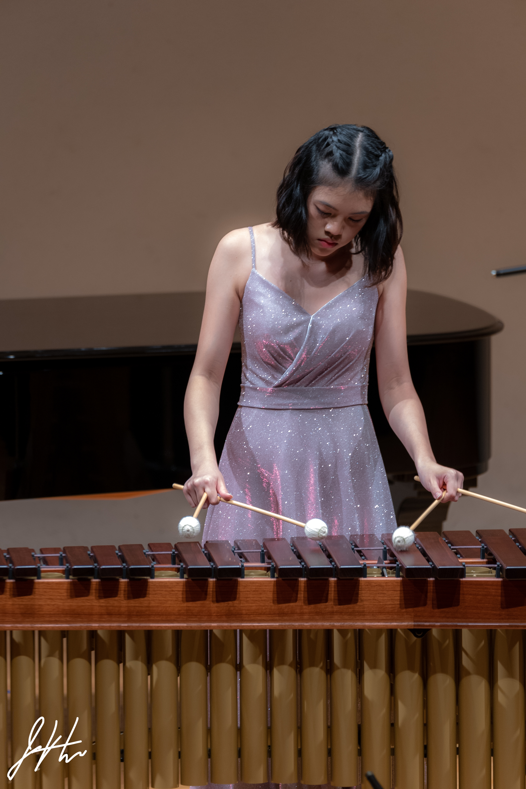

Percussionist & Artist
Percussion performance at the intersection of classical artistry, scientific inquiry, and creative communication.
Biography
Born and raised in Taipei, Taiwan, my journey with percussion began in my elementary school band program — and what started as an extracurricular activity quietly became something far more essential. I have always been a creative person: dancing, painting, making music. But percussion claimed a particular piece of me. When the time came to go abroad for college, I knew I couldn't leave it behind. It had become part of my identity — expressive, physical, alive — and so I chose to pursue it seriously, studying percussion performance alongside neuroscience at Northwestern University. What draws me to percussion is, in part, its undeniable visual power. The movements of a percussionist carry meaning the way a dancer's body does — they pull an audience in, make them feel the music before they've fully heard it. I draw on my background in dance to bring nuance and intention to every gesture. When I perform, I aim to be expressive and bold, moving and present, while always staying faithful to what the composer has written. Bringing a composer's vision to life through my own interpretation is, at its heart, what performance means to me.
I am currently a student at Northwestern University's Bienen School of Music, where I major in percussion performance and neuroscience, while also pursuing a certificate in Integrated Marketing and Communications. Although neuroscience and percussion can seem like to unrelated subjects, these two fields of study inform each other more than one might expect. My deep interest in the science of learning and memory shapes how I approach the practice room — how to make repetition meaningful, how to encode music efficiently, how to learn in ways that are both durable and expressive. I am constantly exploring what it means to practice not just harder, but smarter, and bringing that curiosity to everything I study.
My percussion studies began under the guidance of Gigi Lo during my elementary school years in Taipei, and it was under her instruction that my passion for the instrument first took root. I now study with Professor She-e Wu at Northwestern University's Bienen School of Music. My competitive achievements include first-place finishes at the Taipei Regional Student Music Competition in 2018, 2020, and 2022; second-place honors at the Taiwan National Student Music Competition in 2021 and 2023; and fourth place at the same competition in 2019. In 2024, at nineteen years old, I was awarded first place at the Great Plains International Marimba Competition in the open category — a division open to competitors eighteen and above — an achievement that marked a meaningful milestone in my artistic development.
Looking ahead, I hope to carry this work beyond the university and into a life devoted to performance — continuing to bring music to audiences, growing as an interpreter, and finding new ways to make percussion resonate with the world around me.
Education & Training
Media
[ Performance Title ]
[ Performance Title ]
[ Performance Title ]
[ Performance Title ]
[ Performance Title ]
[ Performance Title ]